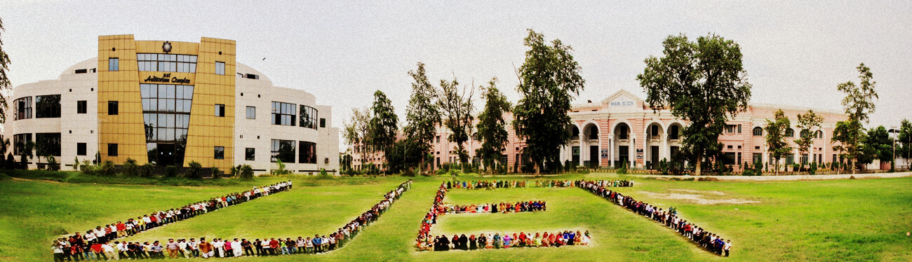

UNIVERSITY OF ENGINEERING AND TECHNOLOGY TAXILA
All about us
All ABOUT US
Transportation UET Street Safety Demonstration Project
With phenomenal increase in students' enrollment in 1970's, a plan to establish additional campuses of the University of Engineering and Technology Lahore was conceived. As a result of that , the University College of Engineering Taxila was established in 1975. For three years it functioned at Sahiwal. In 1978 it was shifted to its permanent location at Taxila. The College continued its working under the administrative control of the University of Engineering and Technology, Lahore till October 1993. During this month it received its charter as an independent university under the University of Engineering and Technology Taxila Ordinance 1993. At present total enrollment of undergraduate and postgraduate students is above 2000
CDD >about us
Location
The University campus is located on the outskirts of Taxila at a distance of 5 km from the city. It is situated near railway station Mohra Shah Wali Shah on Taxila-Havelian branch line. The city of Taxila is 35 km from the twin cities of Islamabad and Rawalpindi on the main Rawalpindi-Peshawar highway. The University buses commute daily between the campus and the cities of Islamabad, Rawalpindi and Wah Cantt. The campus covers an area of 163 acres. All the teaching departments, residential colony for teachers/ employees, student hostels, guesthouse, post office and bank are housed on campus.
CONTACT US ON:+923449499402
University of Enigneering & Punjab Police: 15 Technology Taxila, 47050 Highway Police: 1124 +92 51-9047-400 Police Station: 0514-9314355 +92 51-9047-420 Rescue Services: 1122 info@uettaxila.edu.pk Previous Website